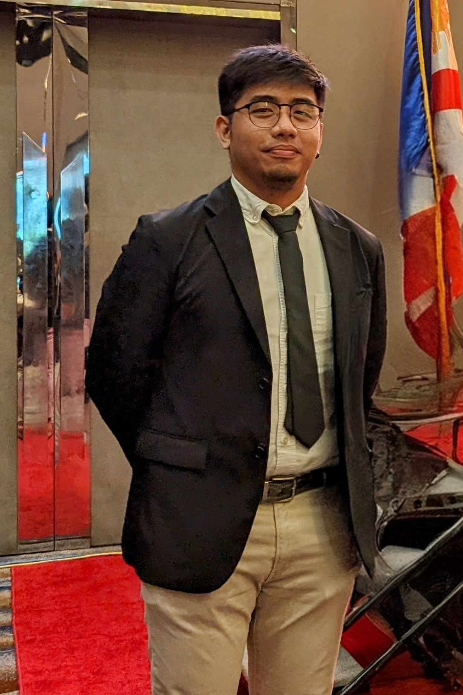

MANAGEMENT
The Management and Policy Team is responsible for guiding project operations in line with DOST-ASTI and national directives. They handle policy formulation, administrative management, and stakeholder coordination to ensure smooth implementation. Their work bridges technical execution with strategic governance.
Alvin E. Retamar
Chief Science Research Specialist / Project Leader

John Chris Kwong
S&T Fellow I
Charmaine Ann S. Manalo
Project Technical Specialist IV - Senior Project Manager
Chelsea Rica M. Abellana
Project Technical Assistant VI - Junior Technology, Policy, and Sustainability Officer
Marvie Joy C. Evangelista
PTA VI - Technical Writer